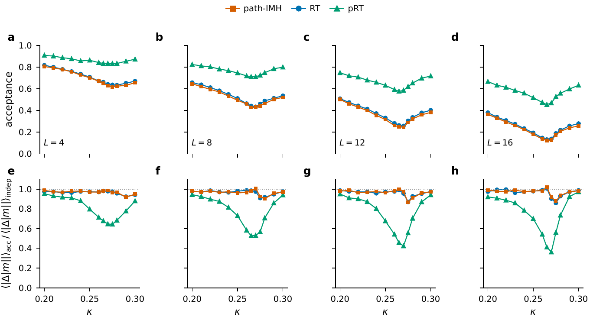
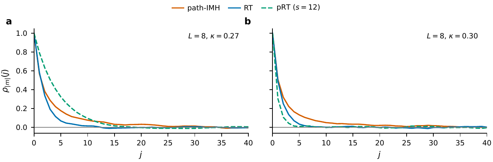
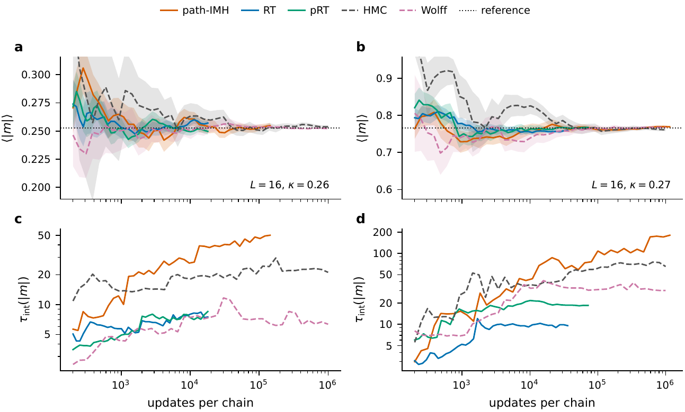
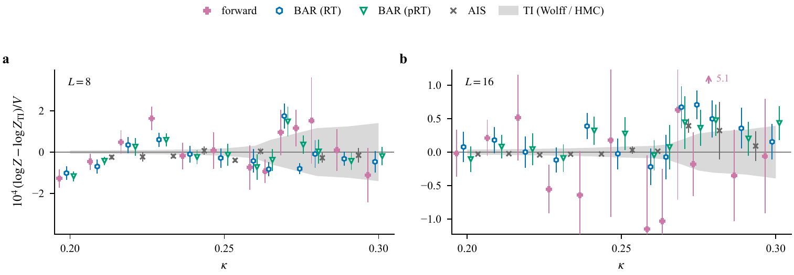
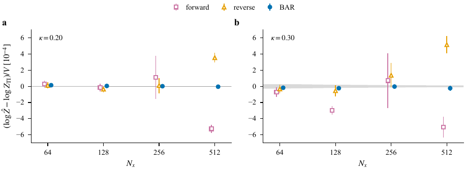

NHMC 预印本NHMC preprint · SPS 博客SPS blog
学习路径上的往返更新：接受率与自相关Metropolis updates on learned round trips: acceptance and autocorrelation
在二维 $\phi^4$ 模型中，格点体积增大时，学习路径的重要性权重集中到少数样本上。因此我们不再对整条路径重加权，而是沿学习路径回退到一个中间场，再从它正向生成新构型，由 Metropolis 判断接受与否。这样的往返更新对任何训练好的模型都保持目标分布，模型训练得不好只会降低接受率。路径来自我们的采样器 NHMC（神经非平衡哈密顿蒙特卡洛）。往返更新的接受率可以在运行之前由条件功方差通过 erfc 预测，自相关时间由接受率决定，近似为 $C(1/\alpha-1/2)$。同一关系还能预测迁移。把在 $L=16$ 上训练的模型冻结后直接用到 $L=64$，远离临界时实测接受率与预测的差别多在 10% 以内。把冻结的 $64\times8$ 模型迁移到 $512\times8$，单向指数平均已经偏离参考，而用往返链提供反向记录的 BAR 仍给出准确的自由能。在临界区，按每次更新计，往返更新在所测尺寸上比哈密顿蒙特卡洛（HMC）去相关更快，但随体积增长得更快。于是临界慢化表现为对路径长度的要求。
In 2D $\phi^4$, importance weights of learned paths concentrate on a few samples as the volume grows. We therefore stop reweighting whole paths. Instead we walk a learned path back to an intermediate field, walk forward to a new configuration, and let a Metropolis test decide. These round trips preserve the target distribution for any trained model, and a poorly trained model only lowers the acceptance. The paths come from our sampler NHMC (neural nonequilibrium Hamiltonian Monte Carlo). The acceptance of a round trip can be predicted before running from the conditional work variance through erfc, and the autocorrelation time follows from the acceptance, roughly as $C(1/\alpha-1/2)$. The same relation predicts transfer. A model trained at $L=16$ and run frozen at $L=64$ stays mostly within 10% of the predicted acceptance away from criticality. After a frozen $64\times8$ model is transferred to $512\times8$, the one-sided exponential averages have drifted, while BAR with reverse records from round-trip chains still gives accurate free energies. Near criticality and per update, round trips decorrelate faster than Hamiltonian Monte Carlo (HMC) at the measured sizes but grow faster with volume. Critical slowing down thus appears as a requirement on the path length.
1 三个问题1 Three problems
用学习的路径做格点场论采样，要同时面对三个问题。它们是机器学习中的权重退化、格点场论中的临界慢化，以及 MCMC 中独立 Metropolis（IMH）链的长时间停留。 使用神经网络采样器时，三者表现为同一个问题，即怎样有效地校正训练得到的路径分布与目标分布之间的失配。这一失配在临界附近最大。我们要检验的是，在完整路径的重要性采样效率很低时，同一套学习路径能否给出仍能有效去相关的精确更新。
我们以二维 $\phi^4$ 理论为测试对象。它是 $L\times L$ 格点上的实标量场，体积 $V=L^2$。耦合 $\kappa$ 控制场的有序程度。$\kappa$ 小时，场在零附近涨落。$\kappa$ 增大到 $0.265$–$0.27$ 附近时经过临界点。再往上进入破缺相，磁化 $m$（场的格点平均） 通常在正值或负值附近涨落。我们关心它的大小 $|m|$ 和符号 $\operatorname{sign}(m)$。作用量和参数见附录。
机器学习：权重退化
扩散模型、流模型和非平衡采样器可以学习连接简单分布与目标分布的路径。只要正反路径概率之比可以计算，每个样本就带有一个重要性权重 $w$。自归一化重加权给出一致的估计，有限样本下有偏差。我们用 $\operatorname{Var}(\log w)$ 和 Kish 有效样本比例（ESS）$(\sum_i w_i)^2/(N\sum_i w_i^2)$ 描述权重的集中程度。
Yuanqi Du 在 2026 年 10 月的博客 Pushing Probabilistic Machine Learning Out of Equilibrium 中讨论了权重退化在大系统上带来的困难。Chatterjee & Diaconis 2018 说明，在其假设下，重要性采样所需的样本量随目标相对提议的 KL 散度指数增长。图 1 是 $\phi^4$ 上的情形。较大格点的每格点 $\operatorname{Var}(\log w)$ 几乎重合，即总方差随体积线性增长，ESS 随之迅速下降。右图另外三条曲线是同一模型上三种马尔可夫链更新的接受率（第 3 节），它们下降得慢得多。
Sampling lattice field theories with learned paths faces three problems at once. They are weight degeneracy in machine learning, critical slowing down in lattice field theory, and long holding times of independence Metropolis (IMH) chains in MCMC. With neural-network samplers the three appear as a single problem, namely how to correct efficiently for the mismatch between the trained path distribution and the target. This mismatch is largest near criticality. We ask whether, when full-path importance sampling is inefficient, the same learned paths can still give exact updates that decorrelate effectively.
Our test bed is 2D $\phi^4$ theory. It is a real scalar field on an $L\times L$ lattice with volume $V=L^2$. The coupling $\kappa$ controls how ordered the field is. At small $\kappa$ the field fluctuates around zero. Near $\kappa\approx0.265$–$0.27$ it passes the critical point. Beyond that it enters the broken phase, where the magnetization $m$ (the lattice average of the field) usually fluctuates around a positive or a negative value. We follow its size $|m|$ and its sign $\operatorname{sign}(m)$. The action and parameters are in the Appendix.
Machine learning: weight degeneracy
Diffusion models, flows and nonequilibrium samplers can learn paths that connect a simple distribution to the target. Whenever the ratio of forward and reverse path probabilities is computable, each sample carries an importance weight $w$. Self-normalized reweighting then gives a consistent estimate, biased at finite sample size. We use $\operatorname{Var}(\log w)$ and the Kish effective sample fraction (ESS) $(\sum_i w_i)^2/(N\sum_i w_i^2)$ to describe weight concentration.
In his October 2026 blog post Pushing Probabilistic Machine Learning Out of Equilibrium, Yuanqi Du discusses the difficulty that weight degeneracy poses for large systems. Chatterjee & Diaconis 2018 show that, under their assumptions, the sample size needed grows exponentially with the KL divergence of the target from the proposal. Fig. 1 shows the case of $\phi^4$. Per-site $\operatorname{Var}(\log w)$ nearly collapses across the larger lattices, so the total variance grows linearly with volume and ESS falls rapidly. The other three lines in the right panel are acceptance rates of three Markov updates on the same models (Section 3), and they fall much more slowly.
每个体积单独训练的 NHMC 模型（$T=16$ 段转移），13 个耦合。左：每格点的路径对数权重方差 $\operatorname{Var}(\log w)/V$（$L=4$、8、10、12、16）。$L\ge8$ 的曲线几乎重合，峰值在临界区域附近。右：所选 $L$ 上的 Kish ESS 比例，以及同一模型上 path-IMH、完整往返（RT）、截断往返（pRT）的实测接受率（第 3 节）。
NHMC models trained separately at each volume ($T=16$ stages), 13 couplings. Left: the per-site variance of the path log weight $\operatorname{Var}(\log w)/V$ ($L=4$, 8, 10, 12, 16). The curves for $L\ge8$ nearly collapse, with a peak near the critical region. Right: the Kish ESS fraction and the measured acceptance of path-IMH, full (RT) and truncated (pRT) round trips on the same models (Section 3).
格点场论：临界慢化与拓扑冻结
格点物理学家关心另一件事，即马尔可夫链要走多少步才能忘掉过去。这由积分自相关时间 $\tau_{\rm int}$ 衡量，单位是算法的一次更新。接近临界点或连续极限时，关联长度 $\xi$ 变大。局部更新和 HMC 的 $\tau_{\rm int}$ 随之按 $\xi^z$ 增长，$z$ 为动力学临界指数。这就是临界慢化（Hohenberg & Halperin 1977、Schaefer, Sommer & Virotta 2011）。在规范理论中，拓扑荷几乎停在一个扇区里不动，称为拓扑冻结（Allés 等 1996、Lüscher & Schaefer 2011）。本文的 $\phi^4$ 测试关注磁化 $|m|$ 与 $\operatorname{sign}(m)$ 的自相关。 Albergo, Kanwar & Shanahan 2019 在二维 $\phi^4$ 上用流模型做独立 Metropolis。在标准算法出现临界慢化的区域，他们得到了更短的自相关。Kanwar 等 2020 把这一思路推广到 $U(1)$ 规范理论。这些方法都把学习模型当作独立提议。
MCMC：独立 Metropolis 的停留
把学习路径作为独立提议，就得到路径上的独立 Metropolis 链，记为 path-IMH。它通过新旧路径的权重比决定是否接受。当前路径的权重很大时，链可能长时间停留（Mengersen & Tweedie 1996、Liu 1996）。
停留来自更新的构造方式，路径本身没有变。详细平衡只保证目标分布不变，去相关有多快则取决于更新如何构造。
Lattice field theory: critical slowing down and topological freezing
Lattice physicists care about something else, namely how many steps a Markov chain needs to forget its past. This is measured by the integrated autocorrelation time $\tau_{\rm int}$, in units of one update of the algorithm. Near a critical point or the continuum limit the correlation length $\xi$ grows. The $\tau_{\rm int}$ of local updates and HMC then grows as $\xi^z$, with $z$ the dynamic critical exponent. This is critical slowing down (Hohenberg & Halperin 1977, Schaefer, Sommer & Virotta 2011). In gauge theories the topological charge almost stops moving between sectors, which is called topological freezing (Allés et al. 1996, Lüscher & Schaefer 2011). Our $\phi^4$ tests concern the autocorrelation of the magnetization $|m|$ and $\operatorname{sign}(m)$. Albergo, Kanwar & Shanahan 2019 used independence Metropolis with a flow model in 2D $\phi^4$. They obtained shorter autocorrelation where standard algorithms show critical slowing down. Kanwar et al. 2020 carried the idea to $U(1)$ gauge theory. These methods all use the learned model as an independent proposal.
MCMC: holding in independence Metropolis
Using learned paths as independent proposals gives independence Metropolis on paths, which we call path-IMH. Acceptance depends on the ratio of the new and current path weights. A large current weight can cause long holding times (Mengersen & Tweedie 1996, Liu 1996).
The holding comes from how the update is built, not from the paths. Detailed balance only guarantees the target distribution. How fast the chain decorrelates depends on how the update is built.
2 非平衡采样的物理2 The physics of nonequilibrium sampling
我们把采样看成一次非平衡过程。它从容易采样的分布 $q_0$ 出发，通过一系列随机转移逐步接近目标 $\pi\propto e^{-S}$。若过程变化过快，系统来不及弛豫，终点分布就会偏离 $\pi$。路径功量化这一过程离平衡有多远。
一条完整路径由 $T$ 段随机转移组成，记为 $\Gamma$。正向过程给出它的概率 $Q_\theta(\Gamma)$。再设想一个反过来的过程。它从目标 $\pi$ 出发，沿配对的反向转移走回起点，给同一条路径一个未归一化的概率 $\widetilde P_\theta(\Gamma)$。两者之比的对数就是路径功
$$W=\log Q_\theta(\Gamma)-\log\widetilde P_\theta(\Gamma).$$
它满足非平衡统计物理里两条熟悉的关系。Jarzynski 等式（Jarzynski 1997）说 $\mathbb E_Q[e^{-W}]=Z$，$Z$ 是 $\pi$ 的归一化常数。Crooks 关系（Crooks 1999）说，目标路径分布与正向路径分布之比正是 $e^{-W}/Z$。所以 $e^{-W}$ 就是把正向样本改写成目标样本所需的权重，也就是上一节的 $w$。平均功与自由能之差，就是正向路径分布 $Q_\theta$ 与归一化反向路径分布 $P_\theta=\widetilde P_\theta/Z$ 之间的失配，
$$\mathbb E_Q[W]=F+D_{\rm KL}(Q_\theta\Vert P_\theta)\ \ge\ F,\qquad F=-\log Z.$$
KL 这一项就是耗散 $\mathbb E_Q[W]-F$。功近似高斯时，耗散等于 $\operatorname{Var}(W)/2$。因此对数权重的方差直接度量路径离可逆有多远。图 1 中这一方差随体积线性增长，这就是大体积上权重退化的来源。
在这个框架里，扩散、流和非平衡采样器的区别只在于每一段转移怎么写。本文运行三种采样器。NHMC（本文）每段先重抽动量，再做哈密顿演化。CMCD（受控蒙特卡洛扩散）与 DBS（扩散桥采样器） 走离散化的 Langevin 扩散。两者的区别在于反向漂移是否与正向共用一个网络。转移公式见附录。
We view sampling as a nonequilibrium process. It starts from an easy distribution $q_0$ and moves towards the target $\pi\propto e^{-S}$ through a chain of stochastic transitions. If the process changes too fast, the system cannot relax and the endpoint distribution deviates from $\pi$. The path work measures how far the process is from equilibrium.
A complete path $\Gamma$ consists of $T$ stochastic stages. The forward process gives it probability $Q_\theta(\Gamma)$. Now imagine the reverse process. It starts from the target $\pi$, walks back along paired reverse transitions, and gives the same path an unnormalized probability $\widetilde P_\theta(\Gamma)$. The log of their ratio is the path work
$$W=\log Q_\theta(\Gamma)-\log\widetilde P_\theta(\Gamma).$$
It obeys two familiar relations of nonequilibrium statistical physics. The Jarzynski equality (Jarzynski 1997) says $\mathbb E_Q[e^{-W}]=Z$, where $Z$ is the normalization of $\pi$. The Crooks relation (Crooks 1999) says the ratio of the target path distribution to the forward one is exactly $e^{-W}/Z$. So $e^{-W}$ is the weight that turns forward samples into target samples, the $w$ of the previous section. The mean work exceeds the free energy by the mismatch between $Q_\theta$ and the normalized reverse distribution $P_\theta=\widetilde P_\theta/Z$,
$$\mathbb E_Q[W]=F+D_{\rm KL}(Q_\theta\Vert P_\theta)\ \ge\ F,\qquad F=-\log Z.$$
The KL term is the dissipation $\mathbb E_Q[W]-F$. For approximately Gaussian work it equals $\operatorname{Var}(W)/2$. The log-weight variance therefore measures directly how far the paths are from reversible. In Fig. 1 this variance grows linearly with volume, and this is the source of weight degeneracy on large lattices.
Within this framework, diffusion, flow and nonequilibrium samplers differ only in how each stage is written. This post runs three samplers. NHMC (this work) redraws a momentum in each stage and then evolves Hamiltonian dynamics. CMCD (controlled Monte Carlo diffusions) and DBS (diffusion bridge sampler) follow a discretized Langevin diffusion, and we call them SDE-type samplers below. They differ in whether the reverse drift shares a network with the forward one. Their transition formulas are in the Appendix.
3 三种校正方式3 Three correction methods
不论用哪种采样器，路径功都给出一个重加权恒等式，也能用来构造保持目标分布的 Metropolis 更新。
重要性加权。直接按权重求平均，
$$\langle O\rangle_\pi=\frac{\mathbb E_Q[e^{-W}O]}{\mathbb E_Q[e^{-W}]}.$$
这是期望之比的恒等式。实际计算时用两个样本均值相除，得到一致但有有限样本偏差的估计（Owen，第 9.2 节）。权重集中到少数样本时，估计变得不稳定。
path-IMH（路径上的独立 Metropolis）。把每条新路径 $\Gamma'$ 当作提议，以 $\min\{1,e^{W(\Gamma)-W(\Gamma')}\}$ 接受。这组成路径空间上的马尔可夫链，其平稳分布的终点边缘为 $\pi$。当前状态一直带着它生成时的功。 因此链一旦进入功特别小、权重特别大的状态，就可能长时间拒绝。
往返更新。为了避免这种停留，往返更新不把当前状态的权重带到下一步。每一步都为当前构型重新抽一条反向路径。从当前构型 $x$ 出发，沿反向转移退回第 $s$ 段的中间场 $u_s$。再从同一个 $u_s$ 正向走出新构型 $y$。新旧两条记录只在第 $s$ 段之后不同，接受率只比较这一段路的功，
$$\alpha_s=\min\{1,e^{-\Delta}\},\qquad \Delta=W_{\theta,s}(\text{新})-W_{\theta,s}(\text{旧}),\qquad W_{\theta,s}=S(x)+\log f_{\theta,s}(a\mid u_s)-\log r_{\theta,s}(b\mid x).$$
这里 $a$ 是第 $s$ 段之后正向路径用到的随机数（如动量），$b$ 是从 $x$ 退回 $u_s$ 的反向记录。$f_{\theta,s}$ 和 $r_{\theta,s}$ 是这几段正反转移密度的乘积。新记录中 $x$ 换成 $y$。整个判断只用到作用量和实际的转移概率，不需要 $Z$。$T$ 是模型的总转移段数，$s$ 是回退阶段，重新采样的段数为 $d=T-s$。$s=0$ 时回到路径起始层，称为完整往返（RT）。$s>0$ 时称为截断往返（pRT）。这种回退再返回的结构与 Neal 1996 的 tempered transitions 相关。 回退得到的中间场依赖当前构型，所以往返更新不是独立提议。
这些构造只要求正反路径概率能够配对计算。确定性映射需计入雅可比。NHMC 中这一因子为 1。
Whatever the sampler, the path work gives a reweighting identity and can also build Metropolis updates that preserve the target.
Importance weighting. Average with the weights,
$$\langle O\rangle_\pi=\frac{\mathbb E_Q[e^{-W}O]}{\mathbb E_Q[e^{-W}]}.$$
This is an identity between expectations. Replacing them with sample averages gives a consistent estimator with finite-sample bias (Owen, Section 9.2). When the weight concentrates on a few samples the estimate becomes unstable.
Path-IMH (independence Metropolis on paths). Treat each new path $\Gamma'$ as a proposal and accept it with $\min\{1,e^{W(\Gamma)-W(\Gamma')}\}$. This forms a path-space Markov chain whose stationary endpoint marginal is $\pi$. The current state keeps the work it was generated with. So once the chain reaches a state of very small work and large weight, it can reject for a long time.
Round trips. To avoid this holding, round trips do not carry the weight of the current state to the next step. At every step we redraw a reverse path for the current configuration. From the current configuration $x$, we walk back along reverse transitions to the intermediate field $u_s$ of stage $s$. Then we walk forward from the same $u_s$ to a new configuration $y$. The old and new records differ only after stage $s$, and the acceptance compares only the work of that part,
$$\alpha_s=\min\{1,e^{-\Delta}\},\qquad \Delta=W_{\theta,s}(\text{new})-W_{\theta,s}(\text{old}),\qquad W_{\theta,s}=S(x)+\log f_{\theta,s}(a\mid u_s)-\log r_{\theta,s}(b\mid x).$$
Here $a$ is the randomness (e.g. momenta) of the forward path after stage $s$, and $b$ is the reverse record from $x$ back to $u_s$. $f_{\theta,s}$ and $r_{\theta,s}$ are the products of the forward and reverse transition densities of these stages. In the new record $x$ is replaced by $y$. The test uses only the action and the actual transition probabilities, not $Z$. $T$ is the total number of model stages, $s$ is the turning stage, and $d=T-s$ is the number of redrawn stages. Returning to the initial layer ($s=0$) gives a full round trip (RT). A turning stage $s>0$ gives a truncated round trip (pRT). This backward-then-forward structure is related to Neal 1996's tempered transitions. The intermediate field depends on the current configuration, so a round trip is not an independent proposal.
These constructions need only paired forward and reverse path probabilities. Deterministic maps must include their Jacobians. In NHMC this factor is 1.
4 NHMC 的结构与训练4 NHMC: design and training
我们的采样器 NHMC 把哈密顿蒙特卡洛的结构搬进了学习路径。标准 HMC 给每个场自由度配一个高斯动量，再按哈密顿量 $H=S+\tfrac12p^2$ 做确定性演化。NHMC 用网络学习条件动量分布、演化中的力和步长。确定性演化采用固定的蛙跳更新结构。每一段 $t=0,\dots,T-1$ 先从依赖当前场的条件高斯里抽一次动量，再演化到下一段，
$$\begin{aligned}p_t&\sim q^F_{\theta,t}(\cdot\mid x_t),\\ (x_{t+1},\bar p_{t+1})&=\Phi_{\theta,t}(x_t,p_t).\end{aligned}$$
记演化中的力为 $\mathcal F_{\theta,t}(x)$。它由目标作用量的解析力、高斯参考分布的力和一个学习的残差组成，组合系数也参与训练。 每段包含 $n_{\rm lf}$ 次蛙跳更新。学到的步长 $h_t$ 在该段内固定，并且与当前场无关。
每段内部是确定性演化，到下一段才重新抽取动量。 因此，增加段内蛙跳子步与增加动量刷新次数是两种不同的操作。
蛙跳的每一步都是剪切变换，所以 $\Phi_{\theta,t}$ 保持相空间体积， 路径概率里的雅可比因子为 1。对称的更新顺序还保证映射可逆。把末端动量反号，再走同一段，就能沿原路径返回，
$$\Phi_{\theta,t}(x_{t+1},-\bar p_{t+1})=(x_t,-p_t).$$
回退时同样需要一个动量密度。反向过程用另一个条件高斯 $q^R_{\theta,t}$ 描述它，配对取值为 $-\bar p_{t+1}$。
$\phi^4$ 有 $\mathbb Z_2$ 对称，因此我们还允许在演化前随机翻转场的符号。
训练目标就是第 2 节的平均功。$F$ 与参数无关，所以最小化 $\mathbb E_Q[W]$ 等价于减小正反路径分布之间的 KL。再加上对功涨落的惩罚，得到
$$\mathcal L=\mathbb E_{Q_\theta}[W]+\lambda_{\rm var}\operatorname{Var}_{Q_\theta}(W),\qquad \lambda_{\rm var}\ge0 .$$
连续动量用高斯重参数化，因此梯度沿各段确定性演化回传。训练中我们还用往返更新产生的构型维护一个缓冲区。这些构型的反向路径也计入损失。在 $\phi^4$ 上，每个 $(L,\kappa)$ 单独训练一个 $T=16$ 段的模型。训练结束后参数全部固定。
Our sampler NHMC carries the structure of Hamiltonian Monte Carlo into learned paths. Standard HMC gives each field degree of freedom a Gaussian momentum and evolves deterministically under $H=S+\tfrac12p^2$. In NHMC, networks learn the conditional momentum distributions, the force and the step sizes. The deterministic evolution follows a fixed leapfrog update structure. Each stage $t=0,\dots,T-1$ draws one momentum from a conditional Gaussian that depends on the current field, then evolves to the next stage,
$$\begin{aligned}p_t&\sim q^F_{\theta,t}(\cdot\mid x_t),\\ (x_{t+1},\bar p_{t+1})&=\Phi_{\theta,t}(x_t,p_t).\end{aligned}$$
Write the force as $\mathcal F_{\theta,t}(x)$. It combines the analytic force of the target action, the force of a Gaussian reference and a learned residual, with learned mixing coefficients. Each stage contains $n_{\rm lf}$ leapfrog updates. Its learned step size $h_t$ is fixed within the stage and independent of the current field.
Evolution within a stage is deterministic, and a fresh momentum is drawn only at the next stage. Increasing the number of leapfrog substeps within a stage and increasing the number of momentum refreshes are therefore different operations.
Every leapfrog step is a shear, so $\Phi_{\theta,t}$ preserves phase-space volume and contributes a Jacobian factor of 1 to the path probability. The symmetric update order also makes the map reversible. Flipping the final momentum and applying the same stage retraces the path,
$$\Phi_{\theta,t}(x_{t+1},-\bar p_{t+1})=(x_t,-p_t).$$
The way back also needs a momentum density. The reverse process uses another conditional Gaussian $q^R_{\theta,t}$ for it, with paired value $-\bar p_{t+1}$.
Since $\phi^4$ has a $\mathbb Z_2$ symmetry, we also allow a random sign flip of the field before the evolution.
The training objective is the mean work of Section 2. Since $F$ does not depend on the parameters, minimizing $\mathbb E_Q[W]$ is the same as reducing the KL between forward and reverse path distributions. Adding a penalty on the work fluctuations gives
$$\mathcal L=\mathbb E_{Q_\theta}[W]+\lambda_{\rm var}\operatorname{Var}_{Q_\theta}(W),\qquad \lambda_{\rm var}\ge0 .$$
Continuous momenta are reparameterized as Gaussians, so gradients flow back through the deterministic evolution of every stage. During training, configurations produced by round-trip updates fill a buffer. Their reverse paths also enter the loss. In $\phi^4$ we train one $T=16$ model for each $(L,\kappa)$. After training all parameters are frozen.
5 往返更新的三条预测5 Round trips: three predictions
往返更新的接受率、自相关和体积依赖都由一个量决定，即固定中间场 $u_s$ 时重新采样的路径片段的功涨落，
$$\sigma^2=\mathbb E_{u_s\sim Q_s}\big[\operatorname{Var}_{f_{\theta,s}}(W_{\theta,s}\mid u_s)\big].$$
$Q_s$ 是正向路径在第 $s$ 段的边缘分布。实际计算时，我们从每个中间场出发生成多条正向后续路径，求组内方差再平均。这个量与完整路径的 $\operatorname{Var}_Q(W)$ 不同，后者还包含不同中间场之间的变化。
接受率。在平稳状态和正反提议配对条件下，交换新旧记录给出功差分布的 Crooks 型对称性 $p(\Delta)=e^{\Delta}p(-\Delta)$。 若功差近似高斯，且其方差近似为 $2\sigma^2$，则有高斯预测
$$\alpha\approx\alpha_{\rm G}=\operatorname{erfc}\!\Big(\frac{\sigma}{2}\Big)\ \sim\ \frac{2}{\sigma\sqrt\pi}\,e^{-\sigma^2/4}\quad(\sigma\gg1).$$
对称性是精确的。高斯形状与方差 $2\sigma^2$ 是近似，图 4 检验它们。这种高斯计算与 HMC 接受率的经典分析（Creutz 1988、Gupta, Kilcup & Sharpe 1988）相同。对完整路径，若 $W$ 在提议分布下为高斯，Kish ESS 的大样本极限为 $e^{-\operatorname{Var}_Q(W)}$，由完整路径的方差决定。往返接受率只依赖较小的条件方差，并按 $e^{-\sigma^2/4}$ 衰减，所以下降得慢得多。
自相关。考虑一个理想基准。它每步以与状态无关的概率 $\alpha$ 独立刷新目标样本，否则保持原状态。此时相关函数为 $(1-\alpha)^j$，积分自相关时间为 $1/\alpha-1/2$。对实测的 $|m|$，我们用经验系数 $C$ 与这一基准比较，
$$\tau_{\rm int}(|m|)\approx C\Big(\frac1\alpha-\frac12\Big).$$
$C=1$ 对应这个理想基准。path-IMH 偏离它，因为大权重状态很难离开（第 3 节）。RT 不保留旧路径的权重，所以不会这样停留。
The acceptance, autocorrelation and volume dependence of round trips are all set by one quantity, the work variance of the redrawn path segment at a fixed intermediate field $u_s$,
$$\sigma^2=\mathbb E_{u_s\sim Q_s}\big[\operatorname{Var}_{f_{\theta,s}}(W_{\theta,s}\mid u_s)\big].$$
$Q_s$ is the stage-$s$ marginal of the forward path distribution. In practice we draw several forward continuations from each intermediate field and average their within-group variances. This differs from the full-path $\operatorname{Var}_Q(W)$, which also includes variation between intermediate fields.
Acceptance. At stationarity, with paired forward and reverse proposals, exchanging old and new records gives the Crooks-type symmetry $p(\Delta)=e^{\Delta}p(-\Delta)$. If the work difference is approximately Gaussian and its variance is approximately $2\sigma^2$, the Gaussian prediction is
$$\alpha\approx\alpha_{\rm G}=\operatorname{erfc}\!\Big(\frac{\sigma}{2}\Big)\ \sim\ \frac{2}{\sigma\sqrt\pi}\,e^{-\sigma^2/4}\quad(\sigma\gg1).$$
The symmetry is exact. The Gaussian shape and the variance $2\sigma^2$ are approximations, tested in Fig. 4. The same Gaussian calculation underlies the classic HMC acceptance analysis (Creutz 1988, Gupta, Kilcup & Sharpe 1988). For full paths with Gaussian $W$ under the proposal, the large-sample Kish ESS fraction is $e^{-\operatorname{Var}_Q(W)}$, set by the full-path variance. Round-trip acceptance depends only on the smaller conditional variance and decays as $e^{-\sigma^2/4}$, so it falls much more slowly.
Autocorrelation. Consider an ideal benchmark. At each step it independently refreshes the target sample with state-independent probability $\alpha$ and otherwise holds its state. Its correlation is $(1-\alpha)^j$, giving integrated autocorrelation time $1/\alpha-1/2$. For measured $|m|$, we compare with this benchmark through an empirical coefficient $C$,
$$\tau_{\rm int}(|m|)\approx C\Big(\frac1\alpha-\frac12\Big).$$
$C=1$ is the ideal benchmark. Path-IMH departs from it because large-weight states are hard to leave (Section 3). RT keeps no old path weight and so does not hold in this way.
图 2 在一个没有网络的小例子上展示这一差别。它是浏览器中的演示，包含 $D$ 个独立的双势阱 $S(x)=\sum_i b\,(x_i^2-1)^2$（$b$ 为势垒高度）。路径为 $T$ 段线性退火的哈密顿蒙特卡洛。这里 $D$ 是维数，与重新采样的段数 $d$ 不同。左右使用同一种路径，分别运行 path-IMH 和完整 RT。
Fig. 2 shows this difference on a small example without networks. It is a browser demonstration with $D$ independent double wells $S(x)=\sum_i b\,(x_i^2-1)^2$ (barrier height $b$). The paths are $T$ linearly annealed Hamiltonian Monte Carlo stages. Here $D$ is the dimension, not the number of redrawn stages $d$. Both panels use the same paths, run as path-IMH and as full RT.
轨迹为每个状态的坐标均值 $\bar x$（最近 400 步）。统计量：接受率、最长连续拒绝，以及往返的预测接受率 $\operatorname{erfc}(\sigma/2)$，其中 $\sigma^2$ 用平均功差 $\langle\Delta\rangle$ 估计。
Traces show the coordinate mean $\bar x$ of each state (last 400 steps). Statistics: acceptance, longest run of rejections, and the predicted round-trip acceptance $\operatorname{erfc}(\sigma/2)$, with $\sigma^2$ estimated by the mean work difference $\langle\Delta\rangle$.
中间场依赖旧构型，会保留一部分旧信息。所以一次接受并不等于一个独立样本，$C$ 需要由实测确定。完整往返的 $C$ 在第 6 节给出。截断往返的接受率更高，但在临界附近每次接受对 $|m|$ 的改变很小（图 3）。
The intermediate field depends on the old configuration and keeps some of its information. So one acceptance is not one independent sample, and $C$ has to be measured. Section 6 gives $C$ for full round trips. Truncated round trips are accepted more often, but near criticality each accepted move changes $|m|$ only a little (Fig. 3).

每个 $(L,\kappa)$ 单独训练的模型，各列依次为 $L=4$、8、12、16。上排：path-IMH（橙）、完整往返（蓝）与截断往返（绿，$s=12$）的接受率。下排：接受的更新使 $|m|$ 平均改变多少，除以两个独立样本之间的平均差。比值为 1（点线）表示平均变化幅度与两个独立构型之间的差异相当。$L=16$、$\kappa=0.27$ 的截断往返约为 0.36。
Models trained separately at each $(L,\kappa)$. Columns are $L=4$, 8, 12, 16. Top: acceptance of path-IMH (orange), full round trips (blue) and truncated round trips (green, $s=12$). Bottom: how much an accepted update changes $|m|$ on average, divided by the mean difference between two independent samples. A ratio of 1 (dotted) means that the mean change matches the difference between two independent configurations. Truncated round trips reach about 0.36 at $L=16$, $\kappa=0.27$.
体积与段数。记回退阶段为 $s$ 时的条件方差为 $\sigma_s^2$。它近似与重新采样的段数成正比，并随体积线性增长，
$$\sigma_s^2\simeq\frac{d}{T}\,\sigma_T^2,\qquad \sigma_T^2\propto V,$$
其中 $\sigma_T^2$ 是完整往返（$s=0$，$d=T$）的条件方差。$s=12$ 与 $s=0$ 的每格点系数之比在所有耦合上都约为四分之一到五分之一（0.21–0.25），接近 $d/T=1/4$。$\sigma_T^2$ 随体积增大，而单独训练更多段的模型能让路径的对数权重方差下降（表 1）。
Volume and stage count. Write $\sigma_s^2$ for the conditional variance at turning stage $s$. It is roughly proportional to the number of redrawn stages and grows linearly with volume,
$$\sigma_s^2\simeq\frac{d}{T}\,\sigma_T^2,\qquad \sigma_T^2\propto V,$$
where $\sigma_T^2$ is the conditional variance of a full round trip ($s=0$, $d=T$). The ratio of the per-site coefficients for $s=12$ and $s=0$ is about one quarter to one fifth (0.21–0.25) at all couplings, close to $d/T=1/4$. $\sigma_T^2$ grows with volume, while training a model with more stages lowers the path log-weight variance (Table 1).
6 结果6 Results
高斯接受率近似
我们在 7 组原生模型（在所用格点上训练的模型，$L=8$、12、16）上用正向路径估计 $\sigma^2$，代入高斯公式，再与长链实测接受率比较。图 4 的预测没有用接受率做任何拟合。数据点紧贴对角线，偏差在 0.022 以内。这些偏差远大于接受率的统计误差，是系统性的，来自功分布的非高斯形状。
Gaussian acceptance approximation
On 7 native models (trained on the lattice they sample, $L=8$, 12, 16), we estimate $\sigma^2$ from forward paths, insert it into the Gaussian formula and compare with long-chain acceptance. Nothing in Fig. 4 is fitted to acceptance. The points sit close to the diagonal, within 0.022. These deviations are far larger than the statistical error of the acceptance and are systematic. They come from the non-Gaussian shape of the work distribution.
左：高斯近似 $\alpha_{\rm G}(\sigma)$ 曲线与滑块位置。自相关读数按 $C=1.18$ 估计。右：7 组原生模型（$L=8$、12、16）的预测与实测接受率。圆为完整往返，方为截断往返（$s=12$），虚线为 $y=x$。悬停查看数值。
Left: the Gaussian approximation $\alpha_{\rm G}(\sigma)$ and slider position. The autocorrelation readout uses $C=1.18$. Right: predicted versus measured acceptance for the 7 native models ($L=8$, 12, 16). Circles are full round trips, squares truncated round trips ($s=12$), and the dashed line is $y=x$. Hover for values.
自相关与接受率
图 5 将每组 $(L,\kappa)$ 的实测 $\tau_{\rm int}$ 与第 5 节的基准 $1/\alpha-1/2$ 对照。在 $L=4$–$16$、13 个耦合的 74 组原生模型上，取对数比的中位数得到完整往返的 $C\approx1.18$，对数残差约 15%。path-IMH 在临界附近的大格点上远在基准之上。在 $L=16$、$\kappa=0.27$，两者的平均接受率相近（0.13 与 0.14），path-IMH 的自相关时间却超过完整往返的 18 倍（不低于 180，完整往返为 9.6）。
Autocorrelation versus acceptance
Fig. 5 places the measured $\tau_{\rm int}$ of every $(L,\kappa)$ against the benchmark $1/\alpha-1/2$ of Section 5. Over 74 native models at $L=4$–$16$ and 13 couplings, the median log ratio gives $C\approx1.18$ for full round trips, with an rms log residual of about 15%. Path-IMH lies far above the benchmark on large lattices near criticality. At $L=16$, $\kappa=0.27$ the two have about the same mean acceptance (0.13 and 0.14), yet the path-IMH autocorrelation time is more than 18 times that of full round trips (at least 180, against 9.6).
横轴 $1/\alpha-1/2$ 是以固定概率独立刷新样本的理想基准，纵轴为实测 $\tau_{\rm int}(|m|)$。每个点是一组 $(L,\kappa)$，$L=4$–$16$、13 个耦合。实线为 $\tau=1.18\,(1/\alpha-1/2)$。带箭头的点为下界。
The horizontal axis $1/\alpha-1/2$ is the ideal benchmark for independent refreshment with constant probability. The vertical axis is the measured $\tau_{\rm int}(|m|)$. Each point is one $(L,\kappa)$, with $L=4$–$16$ and 13 couplings. The solid line is $\tau=1.18\,(1/\alpha-1/2)$. Points with arrows are lower bounds.
自相关函数也显示出这一差异。使用同一个模型、平均接受率相近时，往返更新的自相关函数在数步内衰减至接近零。path-IMH 则存在延伸到约 30 步的长尾（图 6）。随着链长增加，往返更新的自相关时间估计很快趋于稳定。path-IMH 的估计仍随链长持续增大（图 7）。
The autocorrelation functions show the same difference. With the same model and similar acceptance, the round-trip autocorrelation function falls to near zero within a few steps. Path-IMH instead has a long tail extending to about 30 steps (Fig. 6). As the chains grow longer, the round-trip autocorrelation estimate settles quickly. The path-IMH estimate keeps rising with chain length (Fig. 7).

$L=8$ 上每个 $(L,\kappa)$ 单独训练的模型，$|m|$ 的自相关函数，左 $\kappa=0.27$，右 $\kappa=0.30$。path-IMH、完整往返（RT）与截断往返（pRT，$s=12$）使用同一个模型，横轴 $j$ 是包含拒绝在内的更新次数。path-IMH 与完整往返的平均接受率相近。
Autocorrelation functions of $|m|$ at $L=8$ for the models trained separately at each $(L,\kappa)$, left $\kappa=0.27$, right $\kappa=0.30$. Path-IMH, full round trips (RT) and truncated round trips (pRT, $s=12$) use the same model, and the lag $j$ counts updates including rejections. Path-IMH and full round trips have similar mean acceptance.

$L=16$，左 $\kappa=0.26$，右 $\kappa=0.27$。上排为 $\langle|m|\rangle$ 的累计估计（阴影为标准误，点线为参考值）。下排为随链长估计的 $\tau_{\rm int}(|m|)$。蓝、绿为往返更新，橙为 path-IMH，灰、粉虚线为 HMC 与 Wolff。
$L=16$, left $\kappa=0.26$, right $\kappa=0.27$. Top: running estimate of $\langle|m|\rangle$ (shaded standard error, dotted reference). Bottom: $\tau_{\rm int}(|m|)$ estimated as the chain grows. Blue and green are round trips, orange is path-IMH, and grey and pink dashed lines are HMC and Wolff.
体积与迁移
第 5 节预测条件方差随体积线性增长。我们把训练好的模型原样用到更大的格点上，称为迁移，所用的模型称为冻结模型。这里固定 $T=16$，分别考察 RT（$s=0,d=16$）与 pRT（$s=12,d=4$）。
记 $c_s$ 为 $L=16$ 原生模型上测得的每格点条件方差 $\sigma_s^2/V$。按第 5 节，迁移到体积 $V$ 后条件方差约为 $c_sV$。于是接受率，以及接受率降到目标值 $\alpha_*$ 时的体积为
$$\alpha(V)\approx\alpha_{\rm G}(V)=\operatorname{erfc}\!\Big(\tfrac12\sqrt{c_sV}\Big),\qquad V_{\alpha_*}^{\rm pred}=\frac{4\,[\operatorname{erfc}^{-1}(\alpha_*)]^2}{c_s}.$$
图 8 的预测线只用 $L=16$ 定出。它们给出了更大格点上接受率随体积下降的走势。pRT 比 RT 下降得慢得多。从 $L=24$ 到 64，远离临界的 $\kappa=0.24$ 与 $0.30$ 上，长链测得的接受率与预测相差不超过 30%，多数在 10% 以内。在 $\kappa=0.27$，迁移后的接受率低于预测，差距随尺寸增大。$L=48$ 与 64 的 pRT 分别约为预测的 0.53 与 0.30，所以临界附近接受率比这一关系下降得更快。
Volume and transfer
Section 5 predicts that the conditional variance grows linearly with volume. We run a trained model unchanged on larger lattices. We call this transfer, and the model a frozen model. Here we fix $T=16$ and examine RT ($s=0,d=16$) and pRT ($s=12,d=4$) separately.
Let $c_s$ be the per-site conditional variance $\sigma_s^2/V$ measured on the native $L=16$ model. By Section 5, after transfer to volume $V$ the conditional variance is about $c_sV$. The acceptance, and the volume at which it falls to a target $\alpha_*$, are then
$$\alpha(V)\approx\alpha_{\rm G}(V)=\operatorname{erfc}\!\Big(\tfrac12\sqrt{c_sV}\Big),\qquad V_{\alpha_*}^{\rm pred}=\frac{4\,[\operatorname{erfc}^{-1}(\alpha_*)]^2}{c_s}.$$
In Fig. 8 the prediction lines are fixed at $L=16$ alone. They capture how acceptance falls with volume on larger lattices. pRT falls much more slowly than RT. From $L=24$ to 64, away from criticality at $\kappa=0.24$ and $0.30$, the long-chain acceptances differ from the prediction by at most 30%, mostly by less than 10%. At $\kappa=0.27$ the transferred acceptance falls below the prediction, increasingly with size. The pRT acceptance at $L=48$ and 64 reaches about 0.53 and 0.30 of the prediction, so near criticality the acceptance falls faster than this relation.
冻结的 $L=16$ 模型迁移到 $L=16$–$96$ 的实测接受率（点）和高斯体积预测（线）。 曲线系数只由图 4 中 $L=16$ 的预测确定，实线为 RT，虚线为 pRT。$\kappa=0.20$ 只显示实测点。竖线为 $V_{\alpha_*}^{\rm pred}$。带灰色中心点和向下箭头的空心圆是每链 1000 步的试跑链，只作上限。没有接受的试跑画在 95% 上限 $3/n$ 处，$n$ 为热化后的总转移数。
Measured acceptance of frozen $L=16$ models transferred to $L=16$–$96$ (points) and Gaussian volume predictions (lines). Curve coefficients come only from the $L=16$ predictions of Fig. 4. Solid lines are RT, dashed lines pRT. At $\kappa=0.20$ only measurements are shown. Vertical lines mark $V_{\alpha_*}^{\rm pred}$. Open circles with a grey centre and a downward arrow are 1000-step pilot chains, shown as upper limits only. Pilots with no accepted update are drawn at the 95% upper limit $3/n$, with $n$ the total number of transitions after thermalization.
和 HMC 比：自相关随耦合的变化
图 9 给出各格点尺寸上 $\tau_{\rm int}$ 随耦合的变化。HMC 和 Wolff 团簇算法作为无需训练的参考（设置见附录）。自相关时间以各算法的一次更新为单位。临界附近，HMC 的 $|m|$ 自相关明显增大。按每次更新计，在 $L=16$、$\kappa=0.27$，完整往返（RT）为 9.6，HMC 为 67。但 RT 的自相关随体积增长得更快。在 $\kappa=0.27$、$L=8$–$16$ 上，完整往返的 $\tau_{\rm int}(|m|)$ 约按 $L^{2.3}$ 增长，HMC 约按 $L^{1.5}$，Wolff 约按 $L^{0.4}$。远离临界时，HMC 的自相关几乎不随 $L$ 变化，两者在 $L=16$ 附近已相当。
$\operatorname{sign}(m)$ 的快速翻转有一部分来自 NHMC 中的随机全局 $\mathbb Z_2$ 翻转。HMC 参考链没有这一步。$|m|$ 不受这一翻转影响，它的自相关更直接地反映学到的路径。
Against HMC: autocorrelation versus coupling
Fig. 9 shows $\tau_{\rm int}$ versus coupling at each lattice size. HMC and the Wolff cluster algorithm are references without learning (settings in the Appendix). Autocorrelation times are counted in updates of each algorithm. Near criticality the $|m|$ autocorrelation of HMC grows sharply. Per update, at $L=16$, $\kappa=0.27$ full round trips (RT) give 9.6 and HMC 67. The RT autocorrelation, however, grows faster with volume. At $\kappa=0.27$ over $L=8$–$16$, the full round-trip $\tau_{\rm int}(|m|)$ grows roughly as $L^{2.3}$, HMC as $L^{1.5}$ and Wolff as $L^{0.4}$. Away from criticality the HMC autocorrelation hardly changes with $L$, and the two are already comparable around $L=16$.
Part of the fast $\operatorname{sign}(m)$ flipping comes from the random global $\mathbb Z_2$ flip in NHMC. The HMC reference chain has no such step. $|m|$ is blind to that flip, so its autocorrelation reflects the learned paths more directly.
二维 $\phi^4$ 在所选 $L$ 上的 $\tau_{\rm int}$ 随耦合 $\kappa$ 的变化，以一次完整更新为单位（HMC 一条轨迹，Wolff 一遍 Metropolis 扫描加两次单团簇翻转，往返和 IMH 一次 Metropolis 判断）。HMC 与 Wolff 为参考算法（空心点、虚线）。$\kappa\approx0.265$–$0.27$ 接近临界，$\kappa\ge0.28$ 为破缺相。若 $\operatorname{sign}(m)$ 在整条记录中从未翻转，以顶部箭头表示。
$\tau_{\rm int}$ of 2D $\phi^4$ at the selected $L$ versus the coupling $\kappa$, in units of one complete update (one HMC trajectory, one Metropolis sweep plus two single-cluster flips for Wolff, one round-trip or IMH Metropolis test). HMC and Wolff are reference algorithms (open markers, dashed). $\kappa\approx0.265$–$0.27$ is near criticality, and $\kappa\ge0.28$ is the broken phase. Arrows at the top mark runs whose $\operatorname{sign}(m)$ never flipped within the record.
其他学习采样器
前面的结果都来自 NHMC。往返更新是否依赖 NHMC 的结构，可以用另外两种采样器检验。CMCD 和 DBS 的离散转移也能写出配对的正反路径概率，因此可以直接套用同一套往返更新（见附录）。第 5 节的关系对它们的完整往返同样成立，逐点的 $C$ 在 0.9–1.8 之间。它们的 IMH 链也出现长时间停留。它们的截断往返只重抽末尾很小的漂移步，接受的更新几乎不移动构型，$C$ 可达 10–100。
三种采样器的路径权重方差随耦合的变化不同（图 10 左）。在对称相和临界附近，采用 80 步路径的 CMCD 与 DBS 方差更小，约为 NHMC 的 0.44–0.72 倍。$\kappa\ge0.29$ 时，它们的方差升至 NHMC 的 1.9–4.5 倍，而 16 段 NHMC 保持在 0.9 附近。
Other learned samplers
All results so far use NHMC. Two other samplers test whether round trips depend on its structure. The discrete CMCD and DBS transitions also have computable paired path probabilities, so the same round-trip updates apply directly (see the Appendix). The relations of Section 5 hold equally for their full round trips, with pointwise $C$ between 0.9 and 1.8. Their IMH chains also show long holding times. Their truncated round trips redraw only small final drift steps, so accepted updates barely move the configuration and $C$ reaches 10–100.
Path log-weight variance varies differently with coupling for the three samplers (Fig. 10, left). In the symmetric phase and near criticality, CMCD and DBS with 80-step paths have the smaller variance, about 0.44–0.72 times the NHMC value. For $\kappa\ge0.29$ their variance rises to 1.9–4.5 times the NHMC value, while NHMC with 16 stages stays near 0.9.
左：路径对数权重方差随耦合的变化（NHMC $T=16$，CMCD 与 DBS $T=80$）。右：CMCD（实线、实心圆）与 DBS（虚线、空心方块）在固定总积分时间下把每个训练步细分为 $n$ 个子步，网络仍按训练时的步取值。颜色由浅到深为训练步数 $T=80$、160、320。右图只有 $\kappa=0.27$ 与 $0.30$。
Left: log-weight variance versus coupling (NHMC $T=16$, CMCD and DBS $T=80$). Right: CMCD (solid lines, filled circles) and DBS (dashed lines, open squares) refine each trained step into $n$ substeps at fixed total integration time, with the networks held at the trained step. Shades from light to dark give the number of training steps $T=80$, 160, 320. The right panel covers $\kappa=0.27$ and $0.30$ only.
细化时间步与段数
训练更多段的模型可以减小耗散，对随机微分方程型采样器，训练后细化时间步也可能减小耗散。图 10 右图检验后者，它固定总积分时间，把每个训练步细分为 $n$ 个更小的步，网络仍按训练时的步取值。对三种训练步数（$T=80$、160、320）和两个耦合，CMCD 的方差都随 $n$ 单调下降并趋于平台。DBS 没有固定的规律。$\kappa=0.27$ 时方差下降约三分之一后饱和。$\kappa=0.30$ 时 $T=80$ 与 $T=320$ 的模型反而变差，只有 $T=160$ 的模型改善。CMCD 的反向漂移由 Nelson 关系固定为正向控制项取负号，即 $-f_\theta$。因此正反核在任何步长下都由同一个网络配对，细化只减小离散化误差。DBS 的反向网络 $g_\phi$ 在训练时的离散化下单独优化，细化后没有这种保证。
NHMC 的情形不同。NHMC 每段都重新抽取动量，训练后无法靠细化步长降低功方差。把段内蛙跳子步从 5 增加到 10 只改变该段的数值积分，方差几乎不变（$L=8$ 为 1.23 对 1.24，$L=16$ 为 4.37 对 4.48）。起作用的是动量刷新的次数，所以改进路径的办法是训练更多段的模型。表 1 是在 $\kappa=0.27$ 分别训练不同段数模型的结果。在 $L=4$–$16$、$T=4$–$64$ 上，整条路径的对数权重方差约按 $T^{-0.8}$ 下降。
Refining time steps and stage number
Training more stages reduces the dissipation, and for SDE-type samplers refining the time steps after training may also reduce it. Fig. 10 (right) tests the latter. It refines each trained step into $n$ smaller steps at fixed total integration time, with the networks held at the trained step. For all three numbers of training steps ($T=80$, 160, 320) and both couplings, the CMCD variance decreases monotonically in $n$ towards a plateau . The DBS response has no fixed pattern. At $\kappa=0.27$ the variance drops by about one third and saturates. At $\kappa=0.30$ the $T=80$ and $T=320$ models become worse , and only the $T=160$ model improves. CMCD's reverse drift is fixed by the Nelson relation to minus the forward control, $-f_\theta$. Its forward and reverse kernels are therefore paired by the same network at any step size, and refinement only reduces the discretization error. The DBS reverse network $g_\phi$ is optimized separately at the training discretization and carries no such guarantee after refinement.
NHMC behaves differently. It redraws the momentum at every stage and cannot lower its work variance by refining steps after training. Raising the leapfrog substeps per stage from 5 to 10 changes only the numerical integration within a stage and leaves the variance essentially unchanged (1.23 versus 1.24 at $L=8$, 4.37 versus 4.48 at $L=16$). What matters is the number of momentum refreshments, so the way to better paths is to train a model with more stages. Table 1 shows models trained separately with different stage counts at $\kappa=0.27$. Over $L=4$–$16$ and $T=4$–$64$ the full-path log-weight variance decreases roughly as $T^{-0.8}$.
| $L$ / $T$ | 4 | 8 | 16 | 32 | 64 | $T$ 指数$T$ exponent |
|---|---|---|---|---|---|---|
| 4 | 1.28 | 0.755 | 0.427 | 0.241 | 0.142 | −0.80 ± 0.01 |
| 6 | 2.29 | 1.35 | 0.757 | 0.419 | 0.256* | −0.80 ± 0.02 |
| 8 | 3.51 | 2.14 | 1.22 | 0.679 | 0.382* | −0.81 ± 0.03 |
| 16 | – | 7.32* | 4.37* | 2.48* | 1.42* | −0.79 ± 0.03 |
每个 $(L,T)$ 单独训练模型。无星号的值为三个训练种子的平均，带 * 的值只有一个种子。最后一列是各 $L$ 单独拟合 $\operatorname{Var}(\log w)\propto T^{p}$ 得到的指数 $p$。
Each $(L,T)$ is a separately trained model. Values without an asterisk are means over three training seeds. Values marked * have one seed. The last column is the exponent $p$ of a separate fit $\operatorname{Var}(\log w)\propto T^{p}$ at each $L$.
直接测得的每格点条件方差 $\sigma_s^2/V$，与由接受率和整条路径方差分别拟合出的每格点斜率相近，所以我们用表 1 的 $T^{-0.8}$ 描述完整往返的条件方差。体积较大时，条件方差正比于 $V$。要让接受率不随体积变化，需要 $T^{0.8}\propto V$，即 $T\propto V^{1/0.80}=V^{1.25}$。这一指数由 $L\le16$ 外推得到。
The directly measured per-site conditional variance $\sigma_s^2/V$ is close to the per-site slopes fitted from the acceptance and from the full-path variance, so we use the $T^{-0.8}$ of Table 1 for the conditional variance of a full round trip. At larger volume the conditional variance is proportional to $V$. Keeping the acceptance fixed as the volume grows then needs $T^{0.8}\propto V$, that is $T\propto V^{1/0.80}=V^{1.25}$. This exponent is extrapolated from $L\le16$.
配分函数与自由能
完整正反路径的概率比给出配分函数的无偏估计 $\mathbb E_Q[e^{-W}]=Z$。从目标分布出发的完整反向记录给出同一个配分函数的反向估计。我们从链上记录的构型退回路径起点，得到完整的反向路径，再与正向路径一起代入 Bennett 接受率方法（BAR）做双向估计。反向记录来自同一模型的往返链，所以不需要外部平衡模拟。图 11 比较方形格点上的估计。在 $L=16$，正向估计在 $\kappa=0.28$ 偏差最大，为 0.13。三种链给出的 BAR 都与热力学积分（TI）相差约 0.02 以内。
Partition functions and free energy
Complete forward and reverse path-probability ratios give an unbiased estimate of the partition function, $\mathbb E_Q[e^{-W}]=Z$. Complete reverse records started from the target distribution give a reverse estimate of the same partition function. We walk recorded chain configurations back to the start of the path and combine these complete reverse paths with forward paths in the Bennett acceptance ratio (BAR), a bidirectional estimate. The reverse records come from round-trip chains of the same model, so no external equilibrium simulation is needed. Fig. 11 compares the estimates on square lattices. At $L=16$ the forward estimate deviates most at $\kappa=0.28$, by 0.13. BAR from all three chains stays within about 0.02 of thermodynamic integration (TI).

每个 $(L,\kappa)$ 单独训练的 NHMC 模型，每格点的 $\log Z$ 偏差 $(\log\hat Z-\log Z_{\rm TI})/V$，单位 $10^{-4}$。左 $L=8$，右 $L=16$。forward 为完整正向路径上 $e^{-W}$ 的平均。BAR (RT) 与 BAR (pRT) 组合正向路径与相应往返链的反向记录。叉号为退火重要性采样（AIS），灰带为热力学积分参考的误差。右图 $\kappa=0.28$ 的 forward 点在纵轴范围之外，以箭头标出。
Per-site deviation of $\log Z$, $(\log\hat Z-\log Z_{\rm TI})/V$ in units of $10^{-4}$, for NHMC models trained separately at each $(L,\kappa)$. Left $L=8$, right $L=16$. Forward is the mean of $e^{-W}$ over complete forward paths. BAR (RT) and BAR (pRT) combine the forward paths with reverse records from the corresponding round-trip chains. Crosses are annealed importance sampling (AIS), and the grey band is the error of the thermodynamic-integration reference. In the right panel the forward point at $\kappa=0.28$ lies outside the vertical range and is marked by an arrow.
更难的检验是迁移。我们在 $\kappa=0.20$ 与 $0.30$ 上各训练一个 $64\times8$ 的模型，冻结参数后直接用到 $N_x\times8$ 的格点上，$N_x$ 从 64 到 512。反向记录来自截断往返链（$s=12$）。图 12 给出每格点的 $\log Z$ 残差。BAR 在每个尺寸上都与 TI 一致，每格点残差不超过 $0.25\times10^{-4}$。单向的正向与反向指数平均随体积分开。到 $512\times8$，正向估计每格点偏低 $(5.1$–$5.3)\times10^{-4}$，反向估计偏高 $(3.5$–$5.2)\times10^{-4}$。同一范围内截断往返的接受率从 $128\times8$ 的 0.38 与 0.33 降到 $512\times8$ 的 0.08 与 0.05，与第 5 节的接受率关系一致。BAR 只需要正反功分布在 $F$ 附近重叠，而提供反向记录的往返链仍在更新。
Transfer is a harder test. We train one $64\times8$ model at each of $\kappa=0.20$ and $0.30$, freeze it and apply it directly to $N_x\times8$ lattices with $N_x$ from 64 to 512. Reverse records come from truncated round-trip chains ($s=12$). Fig. 12 shows the per-site residuals of $\log Z$. BAR agrees with TI at every size, with per-site residuals of at most $0.25\times10^{-4}$. The one-sided forward and reverse exponential averages separate with volume. At $512\times8$ the forward estimate is low by $(5.1$–$5.3)\times10^{-4}$ per site and the reverse estimate high by $(3.5$–$5.2)\times10^{-4}$. Over the same range the truncated round-trip acceptance falls from 0.38 and 0.33 at $128\times8$ to 0.08 and 0.05 at $512\times8$, consistent with the acceptance relation of Section 5. It needs only the overlap of the forward and reverse work distributions near $F$, and the round-trip chains that supply the reverse records still move.

冻结的 $64\times8$ 模型迁移到 $N_x\times8$ 后，每格点的 $\log Z$ 残差 $(\log\hat Z-\log Z_{\rm TI})/V$，单位 $10^{-4}$。实心圆为 BAR，空心方块为单向正向估计，空心三角为单向反向估计。灰带为热力学积分参考的误差，在 $\kappa=0.20$ 窄于线宽。左 $\kappa=0.20$，右 $\kappa=0.30$。
Per-site residuals of $\log Z$, $(\log\hat Z-\log Z_{\rm TI})/V$ in units of $10^{-4}$, for the frozen $64\times8$ model transferred to $N_x\times8$. Filled circles are BAR, open squares the one-sided forward estimates and open triangles the one-sided reverse estimates. The grey band is the error of the thermodynamic-integration reference and is narrower than the line width at $\kappa=0.20$. Left $\kappa=0.20$, right $\kappa=0.30$.
7 回到三个问题7 Back to the three problems
机器学习。权重退化并不妨碍往返更新。在 $L=16$ 临界附近，正向路径的有效样本比例已降到 $10^{-3}$–$10^{-2}$，完整往返仍保持约 0.14 的接受率。接受率可以由条件功方差通过 erfc 事先预测。往返更新对任何训练好的模型都是精确的。模型训练得不够好时，代价只是接受率降低，不会使结果出错。冻结模型迁移到 $512\times8$ 后，单向指数平均已经偏离热力学积分，而用往返链提供反向记录的 BAR 仍与它一致。
格点场论。在二维 $\phi^4$ 的临界区，按每次更新计，往返更新的 $|m|$ 自相关时间在所测尺寸上短于 HMC（$L=16$、$\kappa=0.27$ 为 9.6 对 67），但随体积增长得更快。原因是自相关只通过接受率依赖体积与耦合，而条件功方差在临界附近最大，并随体积线性增长。所以在往返更新中，第 1 节所说的临界慢化表现为一个可以预先计算的要求，即保持接受率所需的路径长度。按所测尺寸外推，段数需按 $T\propto V^{1.25}$ 增长。
MCMC。学到的非平衡路径和 Wolff 团簇翻转一样，是一种集体更新。RT/pRT 把它变成保持目标分布的 Metropolis 更新。在相近的平均接受率下，完整往返比 path-IMH 去相关快得多。
下一步。我们要在更大格点上直接检验 $T\propto V^{1.25}$。接受率关系可以在每一步迁移之前预测冻结模型还能用多远，所以我们也会沿体积或耦合逐步迁移参考分布与路径。我们还想知道拓扑冻结是否同样表现为对路径长度的要求。真正的检验在四维 $\mathrm{SU}(3)$ 的细格距上，按每次更新比较 $\tau_{\rm int}(Q)$ 与 HMC、边界条件并行回火（PTBC）以及随机归一化流（SNF）。
相关工作：Neal 1996（tempered transitions）；Creutz 1988、Gupta, Kilcup & Sharpe 1988（HMC 接受率）；Jarzynski 1997、Crooks 1999（非平衡功关系）；Mengersen & Tweedie 1996、Liu 1996（IMH）；Hohenberg & Halperin 1977、Schaefer, Sommer & Virotta 2011（临界慢化）；Allés 等 1996、Lüscher & Schaefer 2011（拓扑冻结）；Albergo, Kanwar & Shanahan 2019、Kanwar 等 2020（格点场论中的流模型采样）；Chatterjee & Diaconis 2018（重要性采样的样本量）；Nilmeier 等 2011（NCMC）；Caselle, Cellini, Nada, Panero 2022 与 Bulgarelli, Cellini, Nada 2025（非平衡 MCMC 与 SNF 的体积标度）；Del Debbio 等 2021、Abbott 等 2023（流模型的可扩展性）；Vargas 等 2024（CMCD）；Richter & Berner 2024（DBS）；Blessing 等 2025（UDB，欠阻尼扩散桥）；arXiv:2606.13790（SPS）；Y. Du，Pushing Probabilistic Machine Learning Out of Equilibrium（2026 博客）。
Machine learning. Weight degeneracy does not prevent round-trip updates. Near criticality at $L=16$ the effective sample fraction of forward paths is down to $10^{-3}$–$10^{-2}$ , yet full round trips keep an acceptance of about 0.14. The acceptance can be predicted in advance from the conditional work variance through erfc. Round trips are exact for any trained model. A less well trained model only lowers the acceptance and does not make the results wrong. After a frozen model is transferred to $512\times8$, the one-sided exponential averages have drifted from thermodynamic integration, while BAR with reverse records from round-trip chains still agrees with it.
Lattice field theory. In the critical region of 2D $\phi^4$, the per-update $|m|$ autocorrelation time of round trips is below that of HMC at the measured sizes (9.6 versus 67 at $L=16$, $\kappa=0.27$), but it grows faster with volume. The reason is that the autocorrelation depends on volume and coupling only through the acceptance, while the conditional work variance peaks near criticality and grows linearly with volume. For round trips, the critical slowing down of Section 1 therefore appears as a computable requirement, the path length needed to keep the acceptance. Extrapolating the measured sizes, the stage count must grow as $T\propto V^{1.25}$.
MCMC. Like a Wolff cluster flip, a learned nonequilibrium path is a collective update. RT/pRT turn it into a Metropolis update that preserves the target distribution. At similar mean acceptance, full round trips decorrelate much faster than path-IMH.
Next. We want to test $T\propto V^{1.25}$ directly on larger lattices. The acceptance relation predicts before each step how far a frozen model can be carried, so we will also move reference distributions and paths step by step in volume or coupling. We also want to know whether topological freezing likewise appears as a requirement on the path length. The decisive test is 4D $\mathrm{SU}(3)$ at fine lattice spacing, comparing $\tau_{\rm int}(Q)$ per update with HMC, parallel tempering on boundary conditions (PTBC) and stochastic normalizing flows (SNF).
Related work: Neal 1996 (tempered transitions); Creutz 1988, Gupta, Kilcup & Sharpe 1988 (HMC acceptance); Jarzynski 1997, Crooks 1999 (nonequilibrium work relations); Mengersen & Tweedie 1996, Liu 1996 (IMH); Hohenberg & Halperin 1977, Schaefer, Sommer & Virotta 2011 (critical slowing down); Allés et al. 1996, Lüscher & Schaefer 2011 (topological freezing); Albergo, Kanwar & Shanahan 2019, Kanwar et al. 2020 (flow sampling in lattice field theory); Chatterjee & Diaconis 2018 (sample size of importance sampling); Nilmeier et al. 2011 (NCMC); Caselle, Cellini, Nada, Panero 2022 and Bulgarelli, Cellini, Nada 2025 (volume scaling of NE-MCMC and SNF); Del Debbio et al. 2021, Abbott et al. 2023 (scalability of flows); Vargas et al. 2024 (CMCD); Richter & Berner 2024 (DBS); Blessing et al. 2025 (UDB, underdamped diffusion bridges); arXiv:2606.13790 (SPS); Y. Du, Pushing Probabilistic Machine Learning Out of Equilibrium (blog, 2026).
附录 模型与采样器Appendix Model and samplers
模型与参考算法
二维 $\phi^4$ 的作用量为
$$S(\phi)=\sum_x\Big[-2\kappa\sum_{\mu}\phi_x\phi_{x+\hat\mu}+(1-2\lambda)\phi_x^2+\lambda\phi_x^4\Big],\qquad \lambda=0.022,$$
周期边界，$\kappa$ 取 $0.20$–$0.30$ 共 13 个值。HMC 参考链用步长 $0.1$、每条轨迹 10 步蛙跳。Wolff 参考链的一次更新是一遍 Metropolis 扫描加两次单团簇翻转。两者各记录 $10^6$ 次更新。$\operatorname{sign}(m)$ 的长记录各 $2\times10^5$ 次，在 $L=4$、12、16 上有 5 个耦合，在 $L=8$ 上有 11 个耦合。积分自相关时间 $\tau_{\rm int}=\tfrac12+\sum_{j\ge1}\rho(j)$，$\rho(j)$ 是相隔 $j$ 次更新的归一化自相关。
四种采样器的转移
四种采样器的路径功都可以写成同一种形式，
$$W=\log q_0(x_0)+S(x_T)+\sum_t\big[\log(\text{第 }t\text{ 段正向转移密度})-\log(\text{配对的反向转移密度})\big].$$
NHMC（本文）的正向转移是第 4 节的动量重抽加蛙跳。反向转移是回退时的动量密度 $q^R_{\theta,t}(-\bar p_{t+1}\mid x_{t+1})$，所以每段贡献 $\log q^F_{\theta,t}(p_t\mid x_t)-\log q^R_{\theta,t}(-\bar p_{t+1}\mid x_{t+1})$。蛙跳保体积，不出现雅可比因子。
CMCD（Vargas 等 2024）是受控的过阻尼 Langevin 扩散，按 Euler–Maruyama 离散。插值分布为 $\log\pi_{t_k}=b_k\log\gamma+(1-b_k)\log q_0$（$\gamma=e^{-S}$，系数 $b_k$ 可学），正向与反向转移为
$$\begin{aligned}F_k&=\mathcal N\big(x_k+\eta_k[\nabla\log\pi_{t_k}(x_k)+f_\theta(x_k,t_k)],\,2\eta_k\big),\\ B_k&=\mathcal N\big(x_{k+1}+\eta_k[\nabla\log\pi_{t_{k+1}}(x_{k+1})-f_\theta(x_{k+1},t_{k+1})],\,2\eta_k\big).\end{aligned}$$
反向漂移中的控制项为 $-f_\theta$（Nelson 关系），正反向由同一个网络配对。我们将 UDB（欠阻尼扩散桥）基准的官方训练方案（Blessing 等 2025）移植到 PyTorch，取 $T=80$。步长 $\eta_k$ 以 $0.1$ 为基准，采用余弦调度并参与训练。高斯先验的宽度也参与训练。
DBS（Richter & Berner 2024）这里用的是 UDB 基准中带退火漂移的 DBS 配置。它与 CMCD 用同样的 $F_k$ 与 $B_k$，只是反向漂移中的 $-f_\theta$ 换成单独训练的网络 $g_\phi$，正反向不要求配对。训练方案同上，$T=80$。正文中 CMCD 与 DBS 的结果都在同一套往返框架下得到，不是它们原文的采样方式。
SPS 也是离散化的 Langevin 过程。它从高斯先验出发，正向与反向漂移各用一个网络，时间作为连续变量输入网络。我们没有运行 SPS。
Model and reference algorithms
The action of 2D $\phi^4$ is
$$S(\phi)=\sum_x\Big[-2\kappa\sum_{\mu}\phi_x\phi_{x+\hat\mu}+(1-2\lambda)\phi_x^2+\lambda\phi_x^4\Big],\qquad \lambda=0.022,$$
with periodic boundaries and 13 values of $\kappa$ from $0.20$ to $0.30$. The HMC reference chains use step size $0.1$ and 10 leapfrog steps per trajectory. One update of the Wolff reference chains is one Metropolis sweep plus two single-cluster flips. Each records $10^6$ updates. The long $\operatorname{sign}(m)$ records have $2\times10^5$ updates each, at 5 couplings for $L=4$, 12, 16 and at 11 couplings for $L=8$. The integrated autocorrelation time is $\tau_{\rm int}=\tfrac12+\sum_{j\ge1}\rho(j)$, with $\rho(j)$ the normalized autocorrelation at lag $j$.
Transitions of the four samplers
The path work of all four samplers has the same form,
$$W=\log q_0(x_0)+S(x_T)+\sum_t\big[\log(\text{forward density of stage }t)-\log(\text{paired reverse density})\big].$$
In NHMC (this work), the forward transition is the momentum draw plus leapfrog of Section 4. The reverse transition is the density of the momentum on the way back, $q^R_{\theta,t}(-\bar p_{t+1}\mid x_{t+1})$, so each stage contributes $\log q^F_{\theta,t}(p_t\mid x_t)-\log q^R_{\theta,t}(-\bar p_{t+1}\mid x_{t+1})$. The leapfrog preserves volume, so no Jacobian appears.
CMCD (Vargas et al. 2024) is a controlled overdamped Langevin diffusion, Euler–Maruyama discretized. With the interpolation $\log\pi_{t_k}=b_k\log\gamma+(1-b_k)\log q_0$ ($\gamma=e^{-S}$, learned coefficients $b_k$), the forward and reverse transitions are
$$\begin{aligned}F_k&=\mathcal N\big(x_k+\eta_k[\nabla\log\pi_{t_k}(x_k)+f_\theta(x_k,t_k)],\,2\eta_k\big),\\ B_k&=\mathcal N\big(x_{k+1}+\eta_k[\nabla\log\pi_{t_{k+1}}(x_{k+1})-f_\theta(x_{k+1},t_{k+1})],\,2\eta_k\big).\end{aligned}$$
The control term of the reverse drift is the negative of the forward one, $-f_\theta$ (Nelson relation), so one network pairs forward and reverse. We train it with the official recipe of the UDB (underdamped diffusion bridges) benchmark (Blessing et al. 2025) ported to PyTorch, with $T=80$. The step size $\eta_k$ has base value $0.1$ with a cosine schedule and is learned. The width of the Gaussian prior is learned too.
DBS (Richter & Berner 2024) is used here in the UDB benchmark configuration with annealing drift. It uses the same $F_k$ and $B_k$ as CMCD, except that $-f_\theta$ in the reverse drift is replaced by a separately trained network $g_\phi$, with no pairing. The training recipe is the same, with $T=80$. All CMCD and DBS results in the main text were obtained in the same round-trip framework, not with the sampling procedures of their original papers.
SPS is also a discretized Langevin process. It starts from a Gaussian prior, uses separate networks for the forward and reverse drifts, and takes time as a continuous network input. We did not run SPS.
每一行是一段正向转移（黑色箭头）和配对的反向转移（橙色虚线）。方框内是每段转移的主要成分，橙色文字说明反向转移由什么给出。公式与各采样器的区别见上文。
Each row is one forward transition (black arrows) and its paired reverse transition (orange dashed). The boxes show the main parts of each stage, and the orange text says what gives the reverse transition. Formulas and the differences between samplers are given above.